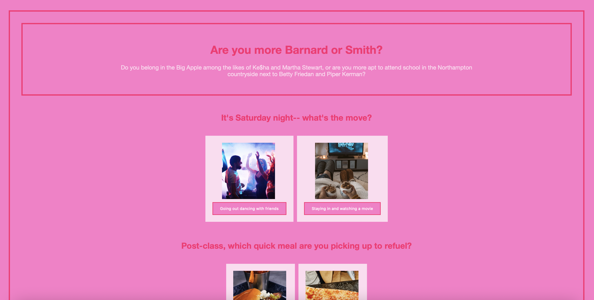
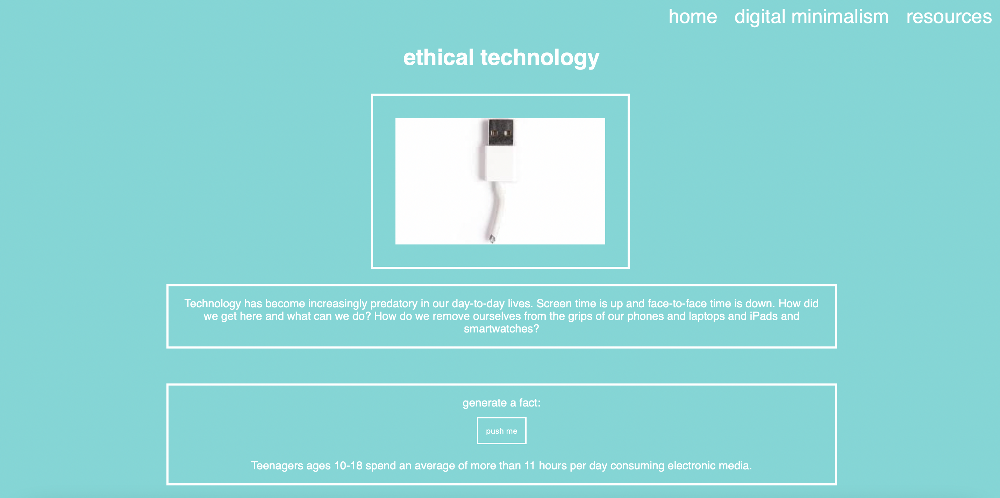
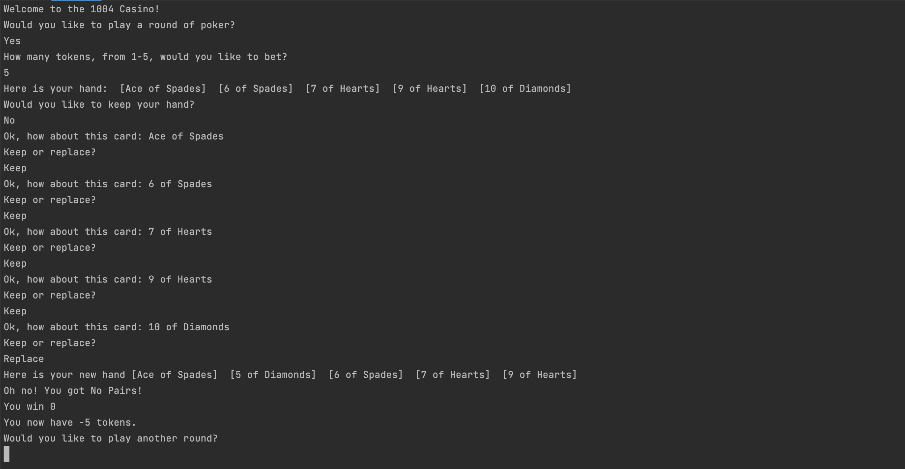
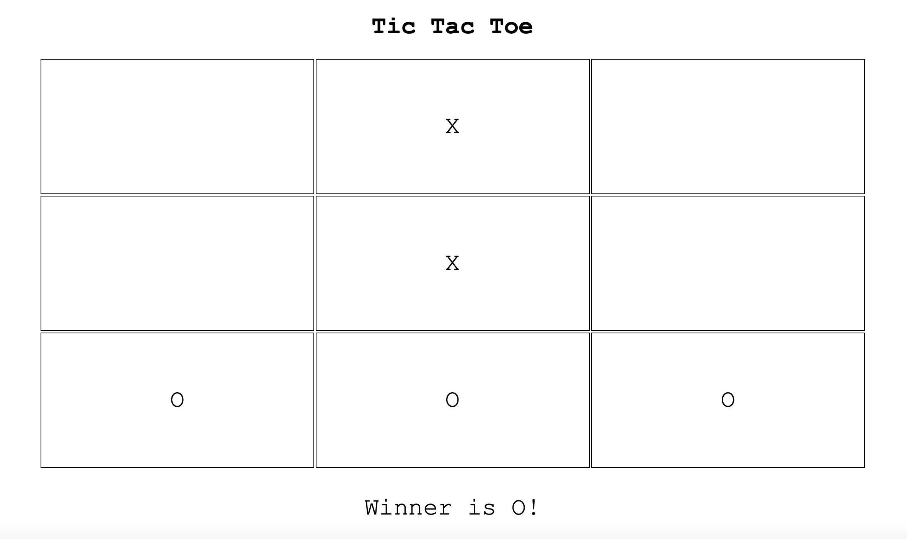

welcome!
i'm kate meter
about me
numbers are my passion. this fall, i'll be entering my third year studying mathematical sciences at barnard college in new york. through a major that focuses on mathematics, computer science, and statistics, i've been able to explore the countless ways that numbers power and explain the world. i'm currently seeking summer 2023 internship opportunities that will allow me to continue playing with numbers.
work experience
vSIP Teaching Assistant @ Girls Who Code
- Teach 50-60 high-school girls introductory front-end web development; take attendance, moderate Zoom chat, and manage time
- Lead an Advisory Group of 10-12 students and provide constructive feedback on their coding projects; host regular Office Hours where students receive help with debugging and other issues
- Create sample website projects to better identify where common misconceptions and mistakes might occur in student work
- Moderate class and Advisory Group Discord channels and thread
Finance and Sales Analyst @ PRO at Apple
- Compiled multiple progress files for a new dashboard in a central cloud location to track its development
- Exported data from internal sales database, summarized in pivot tables, and presented analysis to worldwide team to influence decision-making
- Supported NPI by compiling pandemic-impacted variables to drive awareness and decisions regarding distribution and by cleaning Excel files of order summaries worldwide
- Updated and enhanced monthly report of regional program health and expansion by synthesizing data from a multitude of dashboards, files, and team members
- Transformed system for team’s data/report request intake tracking, utilizing the full capabilities of a new project-management software, to provide a dynamic, streamlined process for submission, prioritization, and collaboration; onboarded pilot group to software
- Researched structure of company’s suppliers to create foundation for reporting and outreach
some of what i've been creating
personality quiz
using html, css, and js, I designed a buzzfeed-style personality quiz that allows a user to interact and determine which seven sisters college they are most like.
activist toolkit
using html, css, and js, i designed a website to educate users about ethical technology.
single-player poker
using java, i created an interactive, single-player poker game that allows for the player to repeat while keeping track of tokens.
single-player tic-tac-toe
using html, css, and js, i created an interactive, single-player tic-tac-toe game where the player gets to play against the computer.